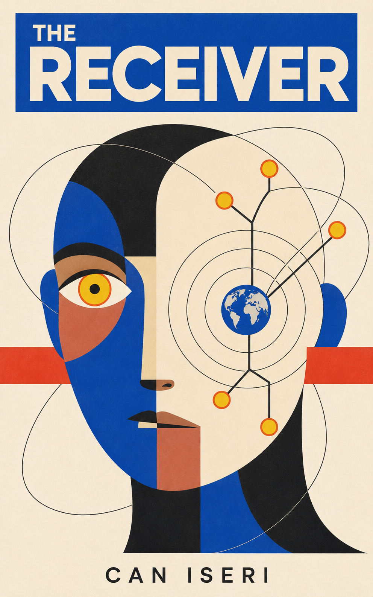
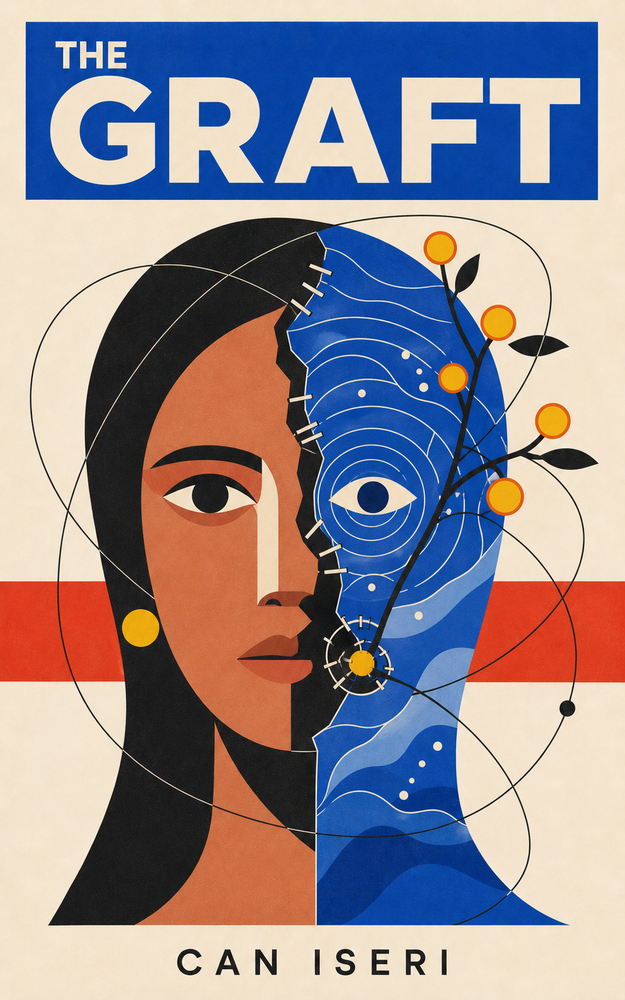

Applications[ 01 ]
From product intent to working applications.
I build applications that turn complex requirements into usable tools and workflows, connecting business needs, data, APIs, implementation, and validation.
Technical product leader · Author · Endurance athlete
I am Can Iseri. I lead technical product work in complex, regulated environments, write speculative fiction, and train across running and cycling.
One discipline, expressed through systems, stories, and distance.
I build applications and complex solutions, and make product and technical decisions across engineering, analytics, risk, and controls.
Two published stories in The Orchard Hypothesis. First contact, memory, authenticity, and the difficult work of understanding another world.
Marathon running, endurance mountain biking, and gravel. Patient preparation, honest conditions, recovery, and a reason to return.
01 / Professional practice
I currently lead technical product work in a regulated enterprise environment. I build applications, develop complex solutions, and make the decisions that connect product intent with technical execution, working across engineering, analytics, risk, and control partners.
I build applications that turn complex requirements into usable tools and workflows, connecting business needs, data, APIs, implementation, and validation.
I develop solutions across applications, integrations, analytics, and operational workflows. The work is connecting requirements, technical constraints, and the needs of the wider system.
I make product and technical decisions, clarify tradeoffs, and turn direction into work teams can execute. I weigh product value, feasibility, risk, and operating constraints to move complex work forward.
Application names, institutions, teams, and sensitive implementation details are intentionally kept private.
How I lead
Define the problem, the purpose of the solution, and what matters most.
Bring business needs, technical choices, risk, and operating constraints into the same decision.
Translate direction into work teams can execute, validate, and operate.
Reengineered selected validation, risk, and change-management paths across product, engineering, risk, and controls.
Designed an automated performance-evaluation approach for complex analytical models.
Led API enhancements that expanded adoption across internal product and platform teams.
Figures are rounded and describe selected completed improvements, not the full scope of my work. Applications, institutions, teams, and implementation details remain private.
02 / Published fiction
Fiction is another way to examine systems. Give an idea agency, pressure, and a cost, then watch what people choose.

When an evaluator discovers a frontier model translating concepts no human culture has ever named, she must decide what version of humanity to show whatever may be listening on the other side.
A story about first contact through machines, and whether authenticity, performance, and our capacity for repair can ever be separated.
Read on Amazon
Years after The Receiver, Nia finds herself carrying the memory of an ocean that is not her own. What returns through ORCHID tests the boundaries between consent, continuity, and the self.
The second published story in The Orchard Hypothesis, continuing the world and questions introduced in The Receiver.
Read on Amazon“Performance degrades authenticity. Repair improves compatibility.”The Receiver
A speculative sequence about civilizations, contact through machines, and the problem of translating one world to another. The Receiver opens the contact. The Graft continues it.
Authenticity · Intelligence as relationship · Repair over perfection
03 / Endurance field log
I train across marathon running, endurance mountain biking, and gravel. The terrain changes. The practice stays the same: prepare patiently, read conditions honestly, recover, and return.
Marathon training and a long-term Six Star journey across the original six World Marathon Majors.
Endurance mountain biking shaped by the sustained effort and technical demands of Leadville.
Long-course gravel riding, including Big Sugar, across terrain that keeps changing the question.
Plan carefully. Test honestly. Adjust without drama. Come back to the work.
04 / The person
This is an edited view, not a complete inventory. Enough to understand the work and the person, without turning a life into a database.
I work where complex systems, human decisions, and long horizons meet.
I care about clear premises, honest constraints, and work that can withstand contact with reality.
Writing and endurance give me two other ways to stay with difficult questions: one on the page, one in motion.
05 / An open conversation
I am open to select conversations about senior technical product leadership, publishing, and ambitious ideas.